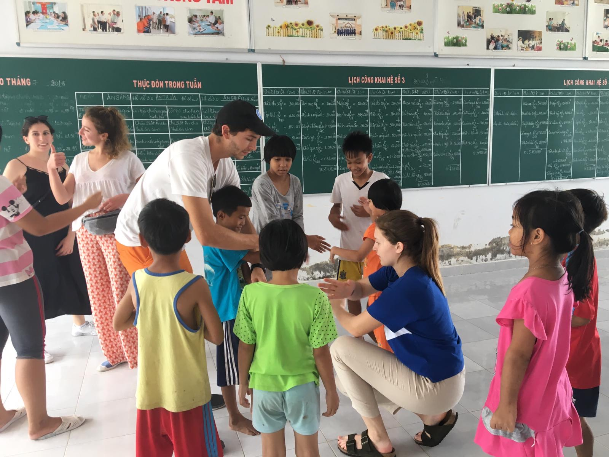

Hue

My Tho

Fondée en 2001 par des étudiants de HEC Paris, Avenir Vietnam est une association de loi 1901 qui mène une action solidaire au Vietnam. Chaque été, une vingtaine d'étudiants se rendent sur place et mettent leur énergie pour poursuivre la mission initiée il y a 18 ans. Si le cœur de l'activité de l'association reste le micro crédit, des actions éducatives sont aussi menées: Avenir Vietnam est donc à la fois le cadre d'un projet de développement économique, mais aussi d'un projet culturel et humain.
L'association est entièrement gérée par les étudiants d'HEC. Les responsabilités sont transmises d'une année sur l'autre à des étudiants de première année qui partent en mission l'été. Cette organisation nous permet d'être dynamiques et flexibles : elle nous permet d'avoir de nouveaux projets chaque année, qui peuvent être réalisés grâce à la structure de l'association. Cette volonté de rester indépendants nous permet de contrôler la mission sur place, et rend le projet particulièrement intéressant pour les étudiants qui partent puisque les responsabilités sont réelles. L'impact de l'association est réel grâce à cette organisation.
Le micro crédit a pour but de soutenir et de développer l'activité économique locale. Cet outil nous semble particulièrement efficace sur le long terme: cette activité permet non seulement de lutter contre la pauvreté, elle est aussi le moyen pour les emprunteurs d'être indépendants grâce à leur commerce, et d’améliorer ainsi leur niveau de vie. La possibilité d’acquérir plus d’autonomie grâce à une aide qui reste pourtant extérieure est un des principaux attraits du micro-crédit. Avenir Vietnam gère une caisse de 30 000€ et s'appuie chaque année sur un budget renouvelé grâce à nos contributeurs de 4000€
Nous voulons souligner ici l'aspect dynamique des projets que nous soutenons. Notre activité de micro crédit n'existerait pas sans une réelle demande sur place de commerçants et d'entrepreneurs locaux qui nous soumettent des projets intéressants, durables et créatifs. Ces projets ne seraient pas possibles sans apports extérieurs et les effets du micro crédit sont très concrets : nous constatons chaque année le résultat du développement ou de la création de commerces par d'anciennes familles ayant emprunté à l'association.
Chaque année, nous présentons de nouveaux projets et nous développons les projets existants. En 2013, la caisse de micro crédit de Can Tho a du fermer, mais en 2014 une caisse a été ouverte à My Tho (dans le sud du pays). Depuis 4 ans, nous organisons une visite chez le dentiste, avec tous les enfants de l'orphelinat de Hué (dans le centre du Vietnam) où nous travaillons. L'association a bientôt 18 ans, mais elle est en constant développement.
Le grand axe de développement cette année est la création d'une nouvelle mission à Mu Cang Chai centrée sur l'écotourisme. Grâce à Khau Pha Friends, notre partenaire local sur place, nous comptons apporter notre aide à la promotion du développement par l'écotourisme. Concrètement, le projet s'incarnera à travers la construction de bâtiments, la sensibilisation à l'écologie et l'éducation. Cela justifie notre besoin de fonds, et l'importance qu'ont les donations pour Avenir Vietnam.